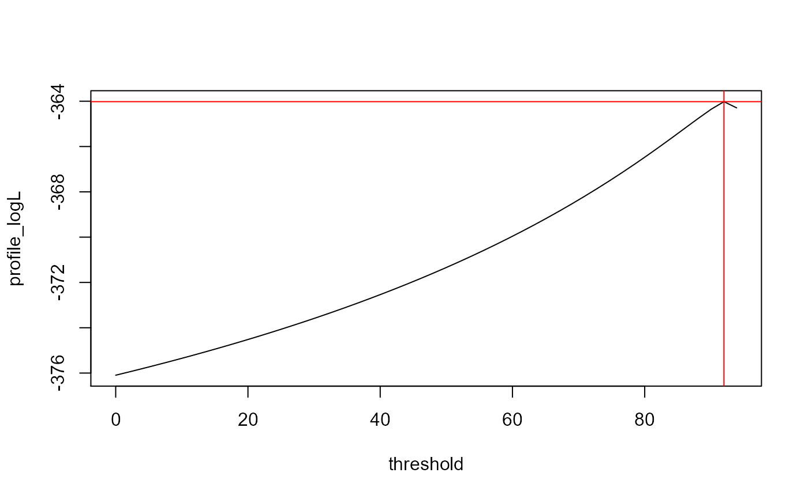

R/likelihood_functions.R
loglik_profiling.default.RdThis function evaluates the log-likelihood with respect to a given threshold parameter of a parametric lifetime distribution. In terms of Maximum Likelihood Estimation this function can be optimized (optim) to estimate the threshold parameter.
# S3 method for default
loglik_profiling(
x,
status,
wts = rep(1, length(x)),
thres,
distribution = c("weibull3", "lognormal3", "loglogistic3", "exponential2"),
...
)A numeric vector which consists of lifetime data. Lifetime data could be every characteristic influencing the reliability of a product, e.g. operating time (days/months in service), mileage (km, miles), load cycles.
A vector of binary data (0 or 1) indicating whether a unit is a right censored observation (= 0) or a failure (= 1).
Optional vector of case weights. The length of wts must be equal
to the number of observations in x.
A numeric value for the threshold parameter.
Supposed parametric distribution of the random variable.
Further arguments passed to or from other methods. Currently not used.
Returns the log-likelihood value for the threshold parameter thres given
the data.
Meeker, William Q; Escobar, Luis A., Statistical methods for reliability data, New York: Wiley series in probability and statistics, 1998
# Vectors:
cycles <- alloy$cycles
status <- alloy$status
# Determining the optimal loglikelihood value:
## Range of threshold parameter must be smaller than the first failure:
threshold <- seq(
0,
min(cycles[status == 1]) - 0.1,
length.out = 50
)
## loglikelihood value with respect to threshold values:
profile_logL <- loglik_profiling(
x = cycles,
status = status,
thres = threshold,
distribution = "weibull3"
)
## Threshold value (among the candidates) that maximizes the
## loglikelihood:
threshold[which.max(profile_logL)]
#> [1] 91.98367
## plot:
plot(
threshold,
profile_logL,
type = "l"
)
abline(
v = threshold[which.max(profile_logL)],
h = max(profile_logL),
col = "red"
)
